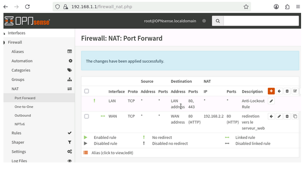

Architecture Sécurisée : Pare-feu pfSense & VPN
Conception et déploiement d'une architecture réseau sécurisée à l'aide d'un pare-feu matériel virtualisé. L'objectif était de protéger les données d'un réseau privé, d'exposer des services web en DMZ, et de garantir des accès distants sécurisés via VPN.
1. Contexte & Objectifs
Afin de valider mes compétences en cybersécurité périmétrique, j'ai simulé une infrastructure d'entreprise complète sous l'émulateur GNS3. Le défi technique consistait à segmenter le réseau pour isoler les services critiques, appliquer le principe du moindre privilège face aux menaces extérieures, et mettre en œuvre une solution de tunnel chiffré (VPN) pour les communications distantes.
2. Solutions Techniques Déployées
- Zonage et Cloisonnement : Définition de trois zones de confiance distinctes (LAN, WAN, DMZ) au sein de la topologie GNS3, reliées aux différentes interfaces virtuelles du routeur pfSense.
- Politique de Filtrage (Firewalling) : Création de règles strictes (Stateful) bloquant par défaut tout trafic entrant non sollicité ("Default Deny") et limitant les flux sortants aux seuls protocoles nécessaires.
- Accès distant sécurisé (VPN) : Configuration d'un réseau privé virtuel (Virtual Private Network) permettant d'établir un tunnel chiffré sécurisé pour des accès nomades ou des interconnexions de sites.
- Publication de services sécurisée (NAT/PAT) : Mise en place du Port Address Translation pour permettre l'accès public à un serveur web isolé en zone DMZ, garantissant ainsi l'étanchéité du réseau LAN interne.
3. Résultats & Validation
Les tests confirment que l'infrastructure est hermétique. Le serveur en DMZ est accessible depuis l'extérieur sans compromettre la sécurité des postes clients du LAN, et le tunnel VPN garantit la confidentialité des échanges distants.

Zonage réseau : Topologie GNS3 et règles de blocage de la zone DMZ vers le LAN interne.

Port Forwarding : Configuration PAT permettant l'accès ciblé au serveur web depuis le WAN.
4. Bilan technique & Expertise acquise
Méthodologie de dépannage : Lors de la configuration de la redirection de ports (PAT), le serveur en DMZ restait injoignable. L'analyse proactive des logs système du pare-feu m'a permis d'identifier que le trafic était bloqué par la règle par défaut. J'ai ainsi acquis le réflexe d'associer systématiquement une règle NAT à une règle d'autorisation de pare-feu.
Vision métier : Le déploiement de cette maquette, couplé à la gestion d'un VPN, m'a prouvé que la sécurité d'entreprise ne se résume pas à cliquer dans une interface. L'efficacité d'un pare-feu dépend intégralement de la conception logique de la topologie en amont et de la rigueur de la politique de sécurité globale.